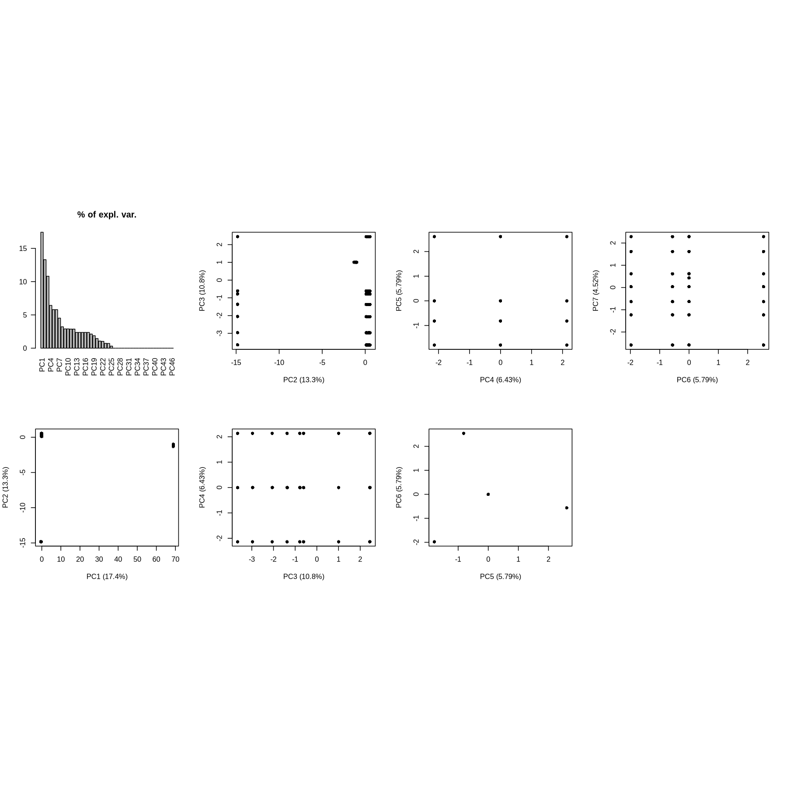
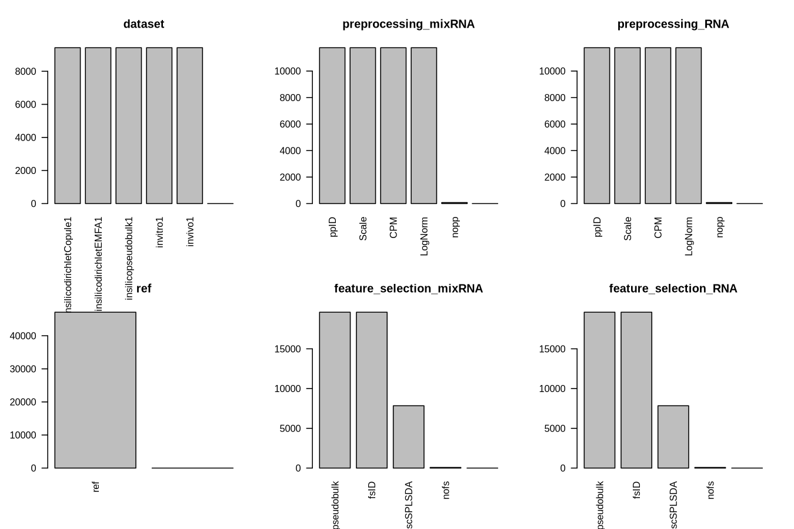
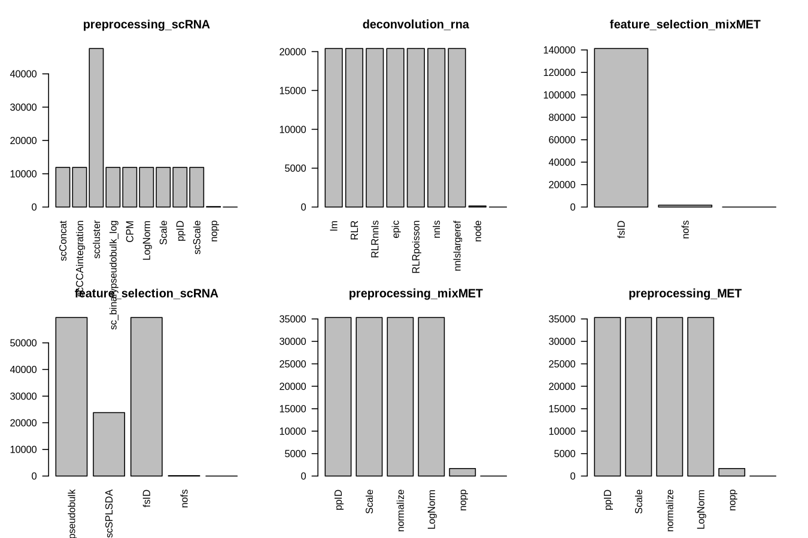
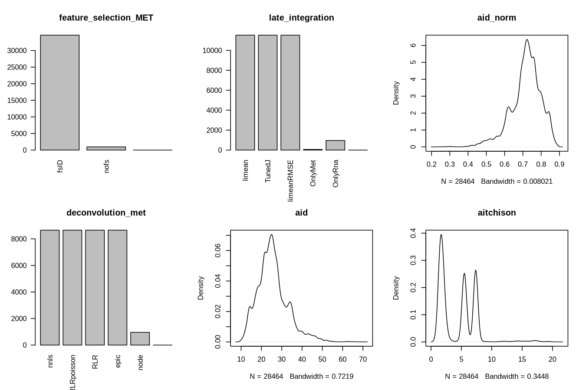
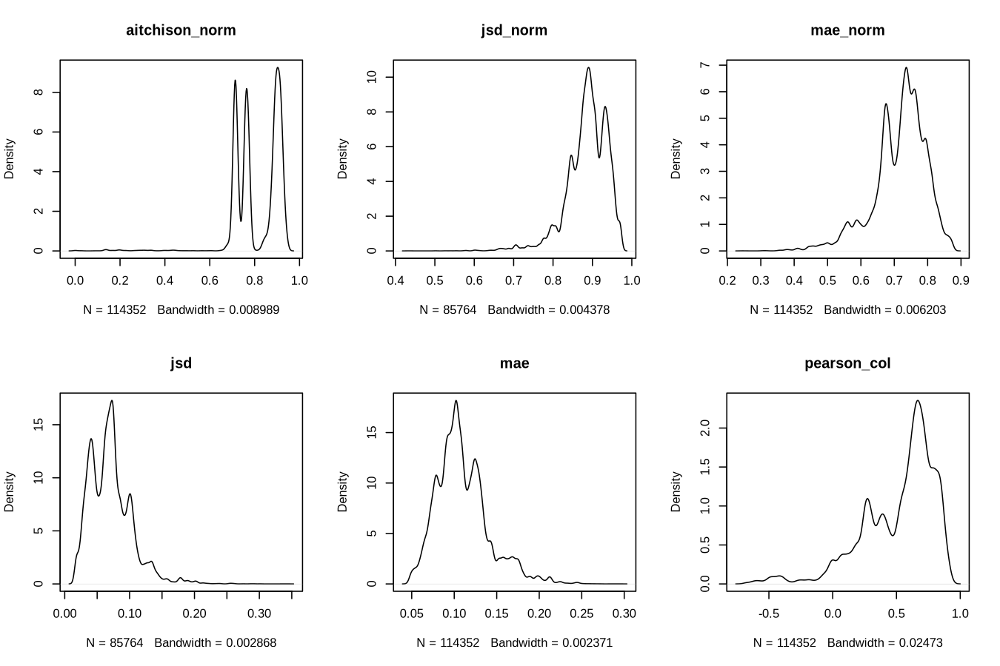
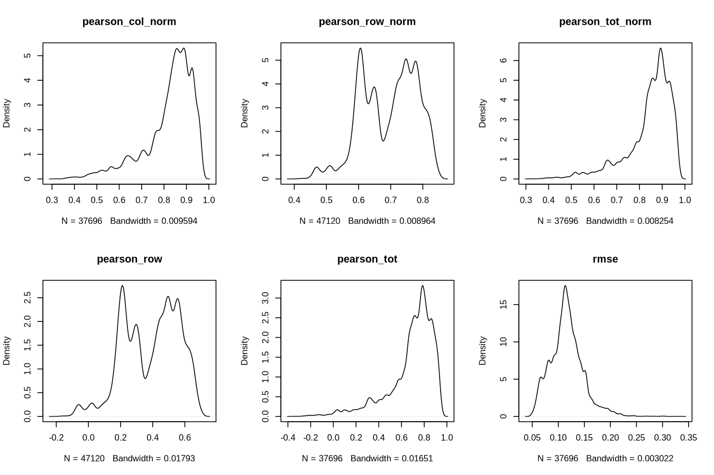
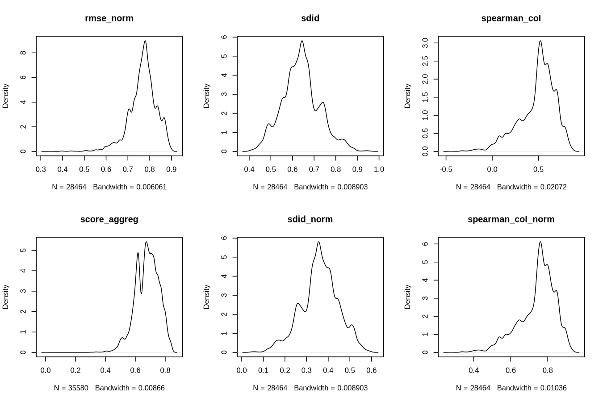
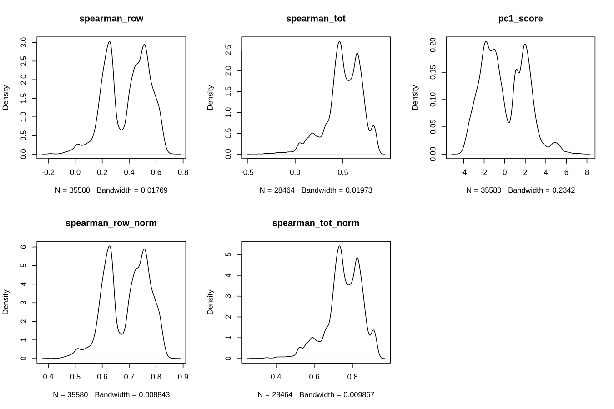
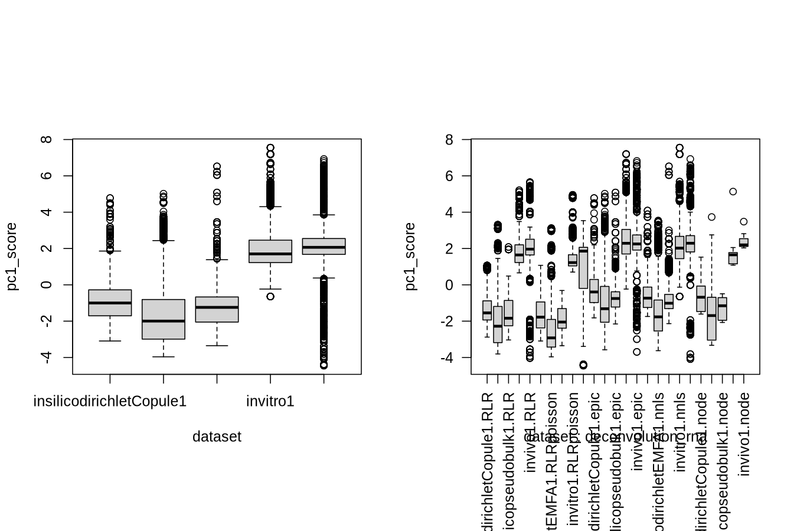

HADACA3 Framework - Generate data for data challenge hadaca
Meta analysis
2025-07-30
1 Aggregated and atomic scores per method
if(!exists("results_li")){
print("reading reulsts li csv")
all_functions_li <- c(
'preprocessing_mixRNA', 'feature_selection_mixRNA',
'preprocessing_RNA', 'feature_selection_RNA',
'preprocessing_scRNA', 'feature_selection_scRNA', 'deconvolution_rna',
'preprocessing_mixMET', 'feature_selection_mixMET',
'preprocessing_MET', 'feature_selection_MET', 'deconvolution_met',
'late_integration'
)
results_li = read.csv(file = gzfile("results_li.csv.gz"))
results_li[all_functions_li] <- lapply(results_li[all_functions_li], as.factor)
}
if(!exists("results_ei")){
all_functions_ei <- c(
'preprocessing_mixRNA', 'feature_selection_mixRNA',
'preprocessing_RNA', 'feature_selection_RNA',
'preprocessing_scRNA', 'feature_selection_scRNA',
'preprocessing_mixMET', 'feature_selection_mixMET',
'preprocessing_MET', 'feature_selection_MET',
'early_integration', 'deconvolution'
)
print("reading reulsts ei csv")
results_ei = read.csv(file = gzfile("results_ei.csv.gz"))
if(length(results_ei)>1 ){
results_ei[all_functions_ei] <- lapply(results_ei[all_functions_ei], as.factor)
}
}
2 Nico test visu (GPT…)
In this step, the factor column is replaced by a contingency table to enable principal component analysis (PCA), with the objective of identifying the factors that influence the scores.
multi_level_cols <- sapply(results_li[all_functions_li], function(x) nlevels(x) > 1)
filtered_functions <- all_functions_li[multi_level_cols]
dropped_cols <- all_functions_li[!multi_level_cols]
cat("Dropped columns (only 1 level):", paste(dropped_cols, collapse = ", "), "\n")
#> Dropped columns (only 1 level):
# Now run the model
model <- lm(score_aggreg ~ ., data = results_li[, c(filtered_functions, "score_aggreg")])
summary(model)
#>
#> Call:
#> lm(formula = score_aggreg ~ ., data = results_li[, c(filtered_functions,
#> "score_aggreg")])
#>
#> Residuals:
#> Min 1Q Median 3Q Max
#> -0.53087 -0.04254 0.00356 0.04958 0.42686
#>
#> Coefficients: (22 not defined because of singularities)
#> Estimate Std. Error t value
#> (Intercept) 6.546e-01 1.151e-03 568.673
#> preprocessing_mixRNAppID -2.539e-02 5.743e-04 -44.201
#> preprocessing_mixRNAScale -6.536e-03 5.743e-04 -11.381
#> preprocessing_mixRNACPM -6.343e-03 5.743e-04 -11.044
#> preprocessing_mixRNAnopp 2.760e-02 6.558e-03 4.209
#> feature_selection_mixRNAfsID 1.258e-03 9.948e-04 1.265
#> feature_selection_mixRNAscSPLSDA -3.294e-02 7.034e-04 -46.832
#> feature_selection_mixRNAnofs NA NA NA
#> preprocessing_RNAppID NA NA NA
#> preprocessing_RNAScale NA NA NA
#> preprocessing_RNACPM NA NA NA
#> preprocessing_RNAnopp NA NA NA
#> feature_selection_RNAfsID NA NA NA
#> feature_selection_RNAscSPLSDA NA NA NA
#> feature_selection_RNAnofs NA NA NA
#> preprocessing_scRNAscCCAintegration 3.253e-03 9.948e-04 3.270
#> preprocessing_scRNAsccluster 3.253e-03 9.305e-04 3.496
#> preprocessing_scRNAsc_binarypseudobulk_log 1.853e-02 9.948e-04 18.624
#> preprocessing_scRNACPM -6.179e-18 9.948e-04 0.000
#> preprocessing_scRNALogNorm -4.316e-18 9.948e-04 0.000
#> preprocessing_scRNAScale -4.926e-18 9.948e-04 0.000
#> preprocessing_scRNAppID -4.440e-18 9.948e-04 0.000
#> preprocessing_scRNAscScale NA NA NA
#> preprocessing_scRNAnopp NA NA NA
#> feature_selection_scRNAscSPLSDA 3.097e-18 7.034e-04 0.000
#> feature_selection_scRNAfsID NA NA NA
#> feature_selection_scRNAnofs NA NA NA
#> deconvolution_rnaRLR 4.862e-02 7.598e-04 63.990
#> deconvolution_rnaRLRnnls -4.363e-03 7.598e-04 -5.742
#> deconvolution_rnaepic 6.462e-03 7.598e-04 8.505
#> deconvolution_rnaRLRpoisson 6.038e-02 7.598e-04 79.467
#> deconvolution_rnannls -9.064e-03 7.598e-04 -11.930
#> deconvolution_rnannlslargeref -6.391e-02 7.598e-04 -84.120
#> deconvolution_rnanode NA NA NA
#> preprocessing_mixMETScale -9.697e-03 5.775e-04 -16.792
#> preprocessing_mixMETnormalize -9.697e-03 5.775e-04 -16.792
#> preprocessing_mixMETLogNorm -1.294e-02 5.775e-04 -22.414
#> preprocessing_mixMETnopp -1.226e-01 2.001e-03 -61.264
#> feature_selection_mixMETnofs NA NA NA
#> preprocessing_METScale NA NA NA
#> preprocessing_METnormalize NA NA NA
#> preprocessing_METLogNorm NA NA NA
#> preprocessing_METnopp NA NA NA
#> feature_selection_METnofs NA NA NA
#> deconvolution_metRLRnnls -4.510e-04 7.639e-04 -0.590
#> deconvolution_metnnls -4.510e-04 7.639e-04 -0.590
#> deconvolution_metnnlslargeref -4.510e-04 7.639e-04 -0.590
#> deconvolution_metRLR 2.229e-02 7.639e-04 29.181
#> deconvolution_metRLRpoisson 1.860e-02 7.639e-04 24.352
#> deconvolution_metepic -2.162e-02 7.639e-04 -28.305
#> deconvolution_metnode NA NA NA
#> late_integrationlimean -6.239e-09 5.003e-04 0.000
#> late_integrationlimeanRMSE 2.229e-02 5.003e-04 44.551
#> late_integrationOnlyRna NA NA NA
#> late_integrationOnlyMet NA NA NA
#> Pr(>|t|)
#> (Intercept) < 2e-16 ***
#> preprocessing_mixRNAppID < 2e-16 ***
#> preprocessing_mixRNAScale < 2e-16 ***
#> preprocessing_mixRNACPM < 2e-16 ***
#> preprocessing_mixRNAnopp 2.57e-05 ***
#> feature_selection_mixRNAfsID 0.205954
#> feature_selection_mixRNAscSPLSDA < 2e-16 ***
#> feature_selection_mixRNAnofs NA
#> preprocessing_RNAppID NA
#> preprocessing_RNAScale NA
#> preprocessing_RNACPM NA
#> preprocessing_RNAnopp NA
#> feature_selection_RNAfsID NA
#> feature_selection_RNAscSPLSDA NA
#> feature_selection_RNAnofs NA
#> preprocessing_scRNAscCCAintegration 0.001074 **
#> preprocessing_scRNAsccluster 0.000472 ***
#> preprocessing_scRNAsc_binarypseudobulk_log < 2e-16 ***
#> preprocessing_scRNACPM 1.000000
#> preprocessing_scRNALogNorm 1.000000
#> preprocessing_scRNAScale 1.000000
#> preprocessing_scRNAppID 1.000000
#> preprocessing_scRNAscScale NA
#> preprocessing_scRNAnopp NA
#> feature_selection_scRNAscSPLSDA 1.000000
#> feature_selection_scRNAfsID NA
#> feature_selection_scRNAnofs NA
#> deconvolution_rnaRLR < 2e-16 ***
#> deconvolution_rnaRLRnnls 9.37e-09 ***
#> deconvolution_rnaepic < 2e-16 ***
#> deconvolution_rnaRLRpoisson < 2e-16 ***
#> deconvolution_rnannls < 2e-16 ***
#> deconvolution_rnannlslargeref < 2e-16 ***
#> deconvolution_rnanode NA
#> preprocessing_mixMETScale < 2e-16 ***
#> preprocessing_mixMETnormalize < 2e-16 ***
#> preprocessing_mixMETLogNorm < 2e-16 ***
#> preprocessing_mixMETnopp < 2e-16 ***
#> feature_selection_mixMETnofs NA
#> preprocessing_METScale NA
#> preprocessing_METnormalize NA
#> preprocessing_METLogNorm NA
#> preprocessing_METnopp NA
#> feature_selection_METnofs NA
#> deconvolution_metRLRnnls 0.554915
#> deconvolution_metnnls 0.554915
#> deconvolution_metnnlslargeref 0.554915
#> deconvolution_metRLR < 2e-16 ***
#> deconvolution_metRLRpoisson < 2e-16 ***
#> deconvolution_metepic < 2e-16 ***
#> deconvolution_metnode NA
#> late_integrationlimean 0.999990
#> late_integrationlimeanRMSE < 2e-16 ***
#> late_integrationOnlyRna NA
#> late_integrationOnlyMet NA
#> ---
#> Signif. codes: 0 '***' 0.001 '**' 0.01 '*' 0.05 '.' 0.1 ' ' 1
#>
#> Residual standard error: 0.07673 on 142907 degrees of freedom
#> Multiple R-squared: 0.2709, Adjusted R-squared: 0.2708
#> F-statistic: 1660 on 32 and 142907 DF, p-value: < 2.2e-16anova_results <- anova(model)
anova_results <- anova_results[order(-anova_results$`Sum Sq`), ]
print(anova_results)
#> Analysis of Variance Table
#>
#> Response: score_aggreg
#> Df Sum Sq Mean Sq F value Pr(>F)
#> Residuals 142907 841.44 0.006
#> deconvolution_rna 6 204.60 34.099 5791.293 <2e-16 ***
#> preprocessing_mixMET 4 29.06 7.266 1234.049 <2e-16 ***
#> deconvolution_met 6 25.53 4.255 722.707 <2e-16 ***
#> feature_selection_mixRNA 2 22.37 11.183 1899.310 <2e-16 ***
#> late_integration 2 15.58 7.791 1323.201 <2e-16 ***
#> preprocessing_mixRNA 4 13.01 3.252 552.332 <2e-16 ***
#> preprocessing_scRNA 7 2.56 0.365 62.066 <2e-16 ***
#> feature_selection_scRNA 1 0.00 0.000 0.000 1
#> ---
#> Signif. codes: 0 '***' 0.001 '**' 0.01 '*' 0.05 '.' 0.1 ' ' 1# Get coefficients sorted by value
coefs <- coef(model)
coefs <- coefs[!grepl("(Intercept)", names(coefs))]
coefs_sorted <- sort(coefs, decreasing = TRUE)
# Top positive and negative functions
head(coefs_sorted, 10) # most positive
#> deconvolution_rnaRLRpoisson
#> 0.060376812
#> deconvolution_rnaRLR
#> 0.048618243
#> preprocessing_mixRNAnopp
#> 0.027601578
#> deconvolution_metRLR
#> 0.022291250
#> late_integrationlimeanRMSE
#> 0.022290777
#> deconvolution_metRLRpoisson
#> 0.018602474
#> preprocessing_scRNAsc_binarypseudobulk_log
#> 0.018526968
#> deconvolution_rnaepic
#> 0.006461853
#> preprocessing_scRNAsccluster
#> 0.003253401
#> preprocessing_scRNAscCCAintegration
#> 0.003253401
tail(coefs_sorted, 10) # most negative
#> preprocessing_mixRNAScale deconvolution_rnannls
#> -0.006536359 -0.009064465
#> preprocessing_mixMETScale preprocessing_mixMETnormalize
#> -0.009696672 -0.009696672
#> preprocessing_mixMETLogNorm deconvolution_metepic
#> -0.012943282 -0.021622150
#> preprocessing_mixRNAppID feature_selection_mixRNAscSPLSDA
#> -0.025386243 -0.032942080
#> deconvolution_rnannlslargeref preprocessing_mixMETnopp
#> -0.063912036 -0.122606269# Load required package
library(fastDummies)
# Use only multi-level function columns (from before)
df_pca <- results_li[, c(filtered_functions, "score_aggreg")]
# One-hot encode the factor columns
df_pca_encoded <- dummy_cols(df_pca, select_columns = filtered_functions, remove_first_dummy = TRUE, remove_selected_columns = TRUE)
# Run PCA on all features (excluding score_aggreg)
pca_result <- prcomp(df_pca_encoded[, !colnames(df_pca_encoded) %in% "score_aggreg"], center = TRUE, scale. = TRUE)
# View explained variance
summary(pca_result)
#> Importance of components:
#> PC1 PC2 PC3 PC4 PC5 PC6 PC7
#> Standard deviation 2.8301 2.4599 2.23142 1.63273 1.63273 1.62980 1.62980
#> Proportion of Variance 0.1483 0.1120 0.09221 0.04937 0.04937 0.04919 0.04919
#> Cumulative Proportion 0.1483 0.2604 0.35258 0.40195 0.45132 0.50051 0.54970
#> PC8 PC9 PC10 PC11 PC12 PC13 PC14
#> Standard deviation 1.44262 1.2209 1.0800 1.0800 1.0800 1.0800 1.0800
#> Proportion of Variance 0.03854 0.0276 0.0216 0.0216 0.0216 0.0216 0.0216
#> Cumulative Proportion 0.58824 0.6158 0.6374 0.6590 0.6806 0.7022 0.7238
#> PC15 PC16 PC17 PC18 PC19 PC20 PC21
#> Standard deviation 1.07907 1.07907 1.07907 1.07907 1.07907 1.0444 1.0444
#> Proportion of Variance 0.02156 0.02156 0.02156 0.02156 0.02156 0.0202 0.0202
#> Cumulative Proportion 0.74541 0.76697 0.78853 0.81010 0.83166 0.8519 0.8721
#> PC22 PC23 PC24 PC25 PC26 PC27 PC28
#> Standard deviation 1.0444 1.0444 1.0444 0.92890 0.81625 0.81314 0.70407
#> Proportion of Variance 0.0202 0.0202 0.0202 0.01598 0.01234 0.01224 0.00918
#> Cumulative Proportion 0.8923 0.9125 0.9327 0.94864 0.96098 0.97322 0.98240
#> PC29 PC30 PC31 PC32 PC33 PC34
#> Standard deviation 0.68807 0.40819 0.40744 0.37982 4.854e-15 4.341e-15
#> Proportion of Variance 0.00877 0.00309 0.00307 0.00267 0.000e+00 0.000e+00
#> Cumulative Proportion 0.99117 0.99425 0.99733 1.00000 1.000e+00 1.000e+00
#> PC35 PC36 PC37 PC38 PC39
#> Standard deviation 3.948e-15 3.035e-15 9.559e-16 8.283e-16 3.638e-16
#> Proportion of Variance 0.000e+00 0.000e+00 0.000e+00 0.000e+00 0.000e+00
#> Cumulative Proportion 1.000e+00 1.000e+00 1.000e+00 1.000e+00 1.000e+00
#> PC40 PC41 PC42 PC43 PC44
#> Standard deviation 2.533e-16 2.457e-16 2.457e-16 2.457e-16 2.457e-16
#> Proportion of Variance 0.000e+00 0.000e+00 0.000e+00 0.000e+00 0.000e+00
#> Cumulative Proportion 1.000e+00 1.000e+00 1.000e+00 1.000e+00 1.000e+00
#> PC45 PC46 PC47 PC48 PC49
#> Standard deviation 2.457e-16 2.457e-16 2.457e-16 2.457e-16 2.457e-16
#> Proportion of Variance 0.000e+00 0.000e+00 0.000e+00 0.000e+00 0.000e+00
#> Cumulative Proportion 1.000e+00 1.000e+00 1.000e+00 1.000e+00 1.000e+00
#> PC50 PC51 PC52 PC53 PC54
#> Standard deviation 2.457e-16 2.457e-16 2.457e-16 2.457e-16 8.894e-17
#> Proportion of Variance 0.000e+00 0.000e+00 0.000e+00 0.000e+00 0.000e+00
#> Cumulative Proportion 1.000e+00 1.000e+00 1.000e+00 1.000e+00 1.000e+00
# Scree plot
plot(pca_result, type = "l", main = "Scree Plot")
# Use ggplot2 for PCA biplot with color = score_aggreg
library(ggplot2)
# Extract PCA coordinates
pca_data <- as.data.frame(pca_result$x)
pca_data$score_aggreg <- df_pca_encoded$score_aggreg
# ggplot(pca_data, aes(x = PC1, y = PC2, color = score_aggreg)) +
# geom_point(size = 3) +
# scale_color_gradient(low = "blue", high = "red") +
# theme_minimal() +
# labs(title = "PCA of Function Combinations Colored by score_aggreg")
ggplot(pca_data, aes(x = PC1, y = score_aggreg)) +
geom_point(size = 3, color = "steelblue") +
theme_minimal() +
labs(title = "PC1 vs score_aggreg")
# Get the proportion of variance explained
explained_var <- summary(pca_result)$importance["Proportion of Variance", ]
meaningful_pcs <- names(explained_var[explained_var > 0])
n_pcs_to_show <- min(length(meaningful_pcs), 3)
meaningful_pcs <- meaningful_pcs[1:n_pcs_to_show]
for (pc in meaningful_pcs) {
cat("\nTop contributing variables to", pc, ":\n")
loadings <- sort(abs(pca_result$rotation[, pc]), decreasing = TRUE)
print(head(loadings, 10))
}
#>
#> Top contributing variables to PC1 :
#> preprocessing_RNA_nopp feature_selection_RNA_nofs
#> 0.3532744 0.3532744
#> preprocessing_scRNA_nopp feature_selection_scRNA_nofs
#> 0.3532744 0.3532744
#> deconvolution_rna_node feature_selection_mixRNA_nofs
#> 0.3532744 0.3532744
#> late_integration_OnlyMet preprocessing_mixRNA_nopp
#> 0.3532744 0.3532744
#> feature_selection_scRNA_fsID feature_selection_RNA_fsID
#> 0.0152800 0.0152800
#>
#> Top contributing variables to PC2 :
#> preprocessing_mixMET_nopp feature_selection_mixMET_nofs
#> 0.40633984 0.40633984
#> preprocessing_MET_nopp feature_selection_MET_nofs
#> 0.40633984 0.40633984
#> deconvolution_met_node late_integration_OnlyRna
#> 0.40633984 0.40633984
#> late_integration_limean late_integration_limeanRMSE
#> 0.03393037 0.03393037
#> preprocessing_MET_normalize preprocessing_mixMET_normalize
#> 0.02851307 0.02851307
#>
#> Top contributing variables to PC3 :
#> feature_selection_RNA_fsID feature_selection_scRNA_fsID
#> 0.4147463 0.4147463
#> feature_selection_mixRNA_fsID preprocessing_scRNA_sccluster
#> 0.4147463 0.3566051
#> feature_selection_mixRNA_scSPLSDA feature_selection_RNA_scSPLSDA
#> 0.2971756 0.2971756
#> feature_selection_scRNA_scSPLSDA preprocessing_scRNA_LogNorm
#> 0.2564685 0.1480072
#> preprocessing_scRNA_CPM preprocessing_scRNA_ppID
#> 0.1480072 0.1480072
if (length(meaningful_pcs) == 0) {
cat("No meaningful principal components found (explained variance is zero).")
}
pca = pca_result
v = pca$sdev * pca$sdev
p = v / sum(v) * 100
names(p) = paste0("PC", 1:length(p))
pc_max = length(p)
cols = 1
layout(matrix(1:8, 2, byrow=FALSE), respect=TRUE)
barplot(p[1:pc_max], main="% of expl. var.", las=2)
# i=1
n_pcs <- min(6, ncol(pca$x) - 1)
for (i in 1:n_pcs) {
j <- i + 1
plot(
pca$x[, i], pca$x[, j],
xlab = paste0("PC", i, " (", signif(p[i], 3), "%)"),
ylab = paste0("PC", j, " (", signif(p[j], 3), "%)"),
col = adjustcolor(cols, alpha.f = 0.3), pch = 16
)
}

3 PCA to reduce multivariate score
# results_li = read.table("metaanalysis/results_li.csv", sep=",", header=TRUE)
foo = sapply(colnames(results_li), function(k) {
print(paste0(k, " ", is.numeric(results_li[,k])))
is.numeric(results_li[,k])
})
#> [1] "dataset FALSE"
#> [1] "ref FALSE"
#> [1] "preprocessing_mixRNA FALSE"
#> [1] "feature_selection_mixRNA FALSE"
#> [1] "preprocessing_RNA FALSE"
#> [1] "feature_selection_RNA FALSE"
#> [1] "preprocessing_scRNA FALSE"
#> [1] "feature_selection_scRNA FALSE"
#> [1] "deconvolution_rna FALSE"
#> [1] "preprocessing_mixMET FALSE"
#> [1] "feature_selection_mixMET FALSE"
#> [1] "preprocessing_MET FALSE"
#> [1] "feature_selection_MET FALSE"
#> [1] "deconvolution_met FALSE"
#> [1] "late_integration FALSE"
#> [1] "aid TRUE"
#> [1] "aid_norm TRUE"
#> [1] "aitchison TRUE"
#> [1] "aitchison_norm TRUE"
#> [1] "jsd TRUE"
#> [1] "jsd_norm TRUE"
#> [1] "mae TRUE"
#> [1] "mae_norm TRUE"
#> [1] "pearson_col TRUE"
#> [1] "pearson_col_norm TRUE"
#> [1] "pearson_row TRUE"
#> [1] "pearson_row_norm TRUE"
#> [1] "pearson_tot TRUE"
#> [1] "pearson_tot_norm TRUE"
#> [1] "rmse TRUE"
#> [1] "rmse_norm TRUE"
#> [1] "score_aggreg TRUE"
#> [1] "sdid TRUE"
#> [1] "sdid_norm TRUE"
#> [1] "spearman_col TRUE"
#> [1] "spearman_col_norm TRUE"
#> [1] "spearman_row TRUE"
#> [1] "spearman_row_norm TRUE"
#> [1] "spearman_tot TRUE"
#> [1] "spearman_tot_norm TRUE"
keys = colnames(results_li)[foo]
data = as.matrix(results_li[,keys])
head(data)[,1:10]
#> aid
#> score-li-insilicodirichletCopule1_ref_mixRNA_CPM_fsID_RNA_CPM_fsID_scRNA_CPM_fsID_RLR_mixMET_LogNorm_fsID_MET_LogNorm_fsID_RLR_liCtSens.h5 21.68641
#> score-li-insilicodirichletCopule1_ref_mixRNA_CPM_fsID_RNA_CPM_fsID_scRNA_CPM_fsID_RLR_mixMET_LogNorm_fsID_MET_LogNorm_fsID_RLR_limean.h5 21.68641
#> score-li-insilicodirichletCopule1_ref_mixRNA_CPM_fsID_RNA_CPM_fsID_scRNA_CPM_fsID_RLR_mixMET_LogNorm_fsID_MET_LogNorm_fsID_RLR_limeanRMSE.h5 17.89965
#> score-li-insilicodirichletCopule1_ref_mixRNA_CPM_fsID_RNA_CPM_fsID_scRNA_CPM_fsID_RLR_mixMET_LogNorm_fsID_MET_LogNorm_fsID_RLRnnls_liCtSens.h5 21.35958
#> score-li-insilicodirichletCopule1_ref_mixRNA_CPM_fsID_RNA_CPM_fsID_scRNA_CPM_fsID_RLR_mixMET_LogNorm_fsID_MET_LogNorm_fsID_RLRnnls_limean.h5 21.35958
#> score-li-insilicodirichletCopule1_ref_mixRNA_CPM_fsID_RNA_CPM_fsID_scRNA_CPM_fsID_RLR_mixMET_LogNorm_fsID_MET_LogNorm_fsID_RLRnnls_limeanRMSE.h5 21.23371
#> aid_norm
#> score-li-insilicodirichletCopule1_ref_mixRNA_CPM_fsID_RNA_CPM_fsID_scRNA_CPM_fsID_RLR_mixMET_LogNorm_fsID_MET_LogNorm_fsID_RLR_liCtSens.h5 0.7590399
#> score-li-insilicodirichletCopule1_ref_mixRNA_CPM_fsID_RNA_CPM_fsID_scRNA_CPM_fsID_RLR_mixMET_LogNorm_fsID_MET_LogNorm_fsID_RLR_limean.h5 0.7590399
#> score-li-insilicodirichletCopule1_ref_mixRNA_CPM_fsID_RNA_CPM_fsID_scRNA_CPM_fsID_RLR_mixMET_LogNorm_fsID_MET_LogNorm_fsID_RLR_limeanRMSE.h5 0.8011150
#> score-li-insilicodirichletCopule1_ref_mixRNA_CPM_fsID_RNA_CPM_fsID_scRNA_CPM_fsID_RLR_mixMET_LogNorm_fsID_MET_LogNorm_fsID_RLRnnls_liCtSens.h5 0.7626713
#> score-li-insilicodirichletCopule1_ref_mixRNA_CPM_fsID_RNA_CPM_fsID_scRNA_CPM_fsID_RLR_mixMET_LogNorm_fsID_MET_LogNorm_fsID_RLRnnls_limean.h5 0.7626713
#> score-li-insilicodirichletCopule1_ref_mixRNA_CPM_fsID_RNA_CPM_fsID_scRNA_CPM_fsID_RLR_mixMET_LogNorm_fsID_MET_LogNorm_fsID_RLRnnls_limeanRMSE.h5 0.7640699
#> aitchison
#> score-li-insilicodirichletCopule1_ref_mixRNA_CPM_fsID_RNA_CPM_fsID_scRNA_CPM_fsID_RLR_mixMET_LogNorm_fsID_MET_LogNorm_fsID_RLR_liCtSens.h5 1.724379
#> score-li-insilicodirichletCopule1_ref_mixRNA_CPM_fsID_RNA_CPM_fsID_scRNA_CPM_fsID_RLR_mixMET_LogNorm_fsID_MET_LogNorm_fsID_RLR_limean.h5 1.724379
#> score-li-insilicodirichletCopule1_ref_mixRNA_CPM_fsID_RNA_CPM_fsID_scRNA_CPM_fsID_RLR_mixMET_LogNorm_fsID_MET_LogNorm_fsID_RLR_limeanRMSE.h5 1.548359
#> score-li-insilicodirichletCopule1_ref_mixRNA_CPM_fsID_RNA_CPM_fsID_scRNA_CPM_fsID_RLR_mixMET_LogNorm_fsID_MET_LogNorm_fsID_RLRnnls_liCtSens.h5 1.726266
#> score-li-insilicodirichletCopule1_ref_mixRNA_CPM_fsID_RNA_CPM_fsID_scRNA_CPM_fsID_RLR_mixMET_LogNorm_fsID_MET_LogNorm_fsID_RLRnnls_limean.h5 1.726266
#> score-li-insilicodirichletCopule1_ref_mixRNA_CPM_fsID_RNA_CPM_fsID_scRNA_CPM_fsID_RLR_mixMET_LogNorm_fsID_MET_LogNorm_fsID_RLRnnls_limeanRMSE.h5 1.822228
#> aitchison_norm
#> score-li-insilicodirichletCopule1_ref_mixRNA_CPM_fsID_RNA_CPM_fsID_scRNA_CPM_fsID_RLR_mixMET_LogNorm_fsID_MET_LogNorm_fsID_RLR_liCtSens.h5 0.9143316
#> score-li-insilicodirichletCopule1_ref_mixRNA_CPM_fsID_RNA_CPM_fsID_scRNA_CPM_fsID_RLR_mixMET_LogNorm_fsID_MET_LogNorm_fsID_RLR_limean.h5 0.9143316
#> score-li-insilicodirichletCopule1_ref_mixRNA_CPM_fsID_RNA_CPM_fsID_scRNA_CPM_fsID_RLR_mixMET_LogNorm_fsID_MET_LogNorm_fsID_RLR_limeanRMSE.h5 0.9230764
#> score-li-insilicodirichletCopule1_ref_mixRNA_CPM_fsID_RNA_CPM_fsID_scRNA_CPM_fsID_RLR_mixMET_LogNorm_fsID_MET_LogNorm_fsID_RLRnnls_liCtSens.h5 0.9142379
#> score-li-insilicodirichletCopule1_ref_mixRNA_CPM_fsID_RNA_CPM_fsID_scRNA_CPM_fsID_RLR_mixMET_LogNorm_fsID_MET_LogNorm_fsID_RLRnnls_limean.h5 0.9142379
#> score-li-insilicodirichletCopule1_ref_mixRNA_CPM_fsID_RNA_CPM_fsID_scRNA_CPM_fsID_RLR_mixMET_LogNorm_fsID_MET_LogNorm_fsID_RLRnnls_limeanRMSE.h5 0.9094704
#> jsd
#> score-li-insilicodirichletCopule1_ref_mixRNA_CPM_fsID_RNA_CPM_fsID_scRNA_CPM_fsID_RLR_mixMET_LogNorm_fsID_MET_LogNorm_fsID_RLR_liCtSens.h5 0.04210104
#> score-li-insilicodirichletCopule1_ref_mixRNA_CPM_fsID_RNA_CPM_fsID_scRNA_CPM_fsID_RLR_mixMET_LogNorm_fsID_MET_LogNorm_fsID_RLR_limean.h5 0.04210104
#> score-li-insilicodirichletCopule1_ref_mixRNA_CPM_fsID_RNA_CPM_fsID_scRNA_CPM_fsID_RLR_mixMET_LogNorm_fsID_MET_LogNorm_fsID_RLR_limeanRMSE.h5 0.02994039
#> score-li-insilicodirichletCopule1_ref_mixRNA_CPM_fsID_RNA_CPM_fsID_scRNA_CPM_fsID_RLR_mixMET_LogNorm_fsID_MET_LogNorm_fsID_RLRnnls_liCtSens.h5 0.04138249
#> score-li-insilicodirichletCopule1_ref_mixRNA_CPM_fsID_RNA_CPM_fsID_scRNA_CPM_fsID_RLR_mixMET_LogNorm_fsID_MET_LogNorm_fsID_RLRnnls_limean.h5 0.04138249
#> score-li-insilicodirichletCopule1_ref_mixRNA_CPM_fsID_RNA_CPM_fsID_scRNA_CPM_fsID_RLR_mixMET_LogNorm_fsID_MET_LogNorm_fsID_RLRnnls_limeanRMSE.h5 0.04046977
#> jsd_norm
#> score-li-insilicodirichletCopule1_ref_mixRNA_CPM_fsID_RNA_CPM_fsID_scRNA_CPM_fsID_RLR_mixMET_LogNorm_fsID_MET_LogNorm_fsID_RLR_liCtSens.h5 0.9303698
#> score-li-insilicodirichletCopule1_ref_mixRNA_CPM_fsID_RNA_CPM_fsID_scRNA_CPM_fsID_RLR_mixMET_LogNorm_fsID_MET_LogNorm_fsID_RLR_limean.h5 0.9303698
#> score-li-insilicodirichletCopule1_ref_mixRNA_CPM_fsID_RNA_CPM_fsID_scRNA_CPM_fsID_RLR_mixMET_LogNorm_fsID_MET_LogNorm_fsID_RLR_limeanRMSE.h5 0.9504821
#> score-li-insilicodirichletCopule1_ref_mixRNA_CPM_fsID_RNA_CPM_fsID_scRNA_CPM_fsID_RLR_mixMET_LogNorm_fsID_MET_LogNorm_fsID_RLRnnls_liCtSens.h5 0.9315582
#> score-li-insilicodirichletCopule1_ref_mixRNA_CPM_fsID_RNA_CPM_fsID_scRNA_CPM_fsID_RLR_mixMET_LogNorm_fsID_MET_LogNorm_fsID_RLRnnls_limean.h5 0.9315582
#> score-li-insilicodirichletCopule1_ref_mixRNA_CPM_fsID_RNA_CPM_fsID_scRNA_CPM_fsID_RLR_mixMET_LogNorm_fsID_MET_LogNorm_fsID_RLRnnls_limeanRMSE.h5 0.9330677
#> mae
#> score-li-insilicodirichletCopule1_ref_mixRNA_CPM_fsID_RNA_CPM_fsID_scRNA_CPM_fsID_RLR_mixMET_LogNorm_fsID_MET_LogNorm_fsID_RLR_liCtSens.h5 0.07359081
#> score-li-insilicodirichletCopule1_ref_mixRNA_CPM_fsID_RNA_CPM_fsID_scRNA_CPM_fsID_RLR_mixMET_LogNorm_fsID_MET_LogNorm_fsID_RLR_limean.h5 0.07359081
#> score-li-insilicodirichletCopule1_ref_mixRNA_CPM_fsID_RNA_CPM_fsID_scRNA_CPM_fsID_RLR_mixMET_LogNorm_fsID_MET_LogNorm_fsID_RLR_limeanRMSE.h5 0.06772128
#> score-li-insilicodirichletCopule1_ref_mixRNA_CPM_fsID_RNA_CPM_fsID_scRNA_CPM_fsID_RLR_mixMET_LogNorm_fsID_MET_LogNorm_fsID_RLRnnls_liCtSens.h5 0.07463829
#> score-li-insilicodirichletCopule1_ref_mixRNA_CPM_fsID_RNA_CPM_fsID_scRNA_CPM_fsID_RLR_mixMET_LogNorm_fsID_MET_LogNorm_fsID_RLRnnls_limean.h5 0.07463829
#> score-li-insilicodirichletCopule1_ref_mixRNA_CPM_fsID_RNA_CPM_fsID_scRNA_CPM_fsID_RLR_mixMET_LogNorm_fsID_MET_LogNorm_fsID_RLRnnls_limeanRMSE.h5 0.08095504
#> mae_norm
#> score-li-insilicodirichletCopule1_ref_mixRNA_CPM_fsID_RNA_CPM_fsID_scRNA_CPM_fsID_RLR_mixMET_LogNorm_fsID_MET_LogNorm_fsID_RLR_liCtSens.h5 0.8072930
#> score-li-insilicodirichletCopule1_ref_mixRNA_CPM_fsID_RNA_CPM_fsID_scRNA_CPM_fsID_RLR_mixMET_LogNorm_fsID_MET_LogNorm_fsID_RLR_limean.h5 0.8072930
#> score-li-insilicodirichletCopule1_ref_mixRNA_CPM_fsID_RNA_CPM_fsID_scRNA_CPM_fsID_RLR_mixMET_LogNorm_fsID_MET_LogNorm_fsID_RLR_limeanRMSE.h5 0.8226632
#> score-li-insilicodirichletCopule1_ref_mixRNA_CPM_fsID_RNA_CPM_fsID_scRNA_CPM_fsID_RLR_mixMET_LogNorm_fsID_MET_LogNorm_fsID_RLRnnls_liCtSens.h5 0.8045501
#> score-li-insilicodirichletCopule1_ref_mixRNA_CPM_fsID_RNA_CPM_fsID_scRNA_CPM_fsID_RLR_mixMET_LogNorm_fsID_MET_LogNorm_fsID_RLRnnls_limean.h5 0.8045501
#> score-li-insilicodirichletCopule1_ref_mixRNA_CPM_fsID_RNA_CPM_fsID_scRNA_CPM_fsID_RLR_mixMET_LogNorm_fsID_MET_LogNorm_fsID_RLRnnls_limeanRMSE.h5 0.7880089
#> pearson_col
#> score-li-insilicodirichletCopule1_ref_mixRNA_CPM_fsID_RNA_CPM_fsID_scRNA_CPM_fsID_RLR_mixMET_LogNorm_fsID_MET_LogNorm_fsID_RLR_liCtSens.h5 0.7008890
#> score-li-insilicodirichletCopule1_ref_mixRNA_CPM_fsID_RNA_CPM_fsID_scRNA_CPM_fsID_RLR_mixMET_LogNorm_fsID_MET_LogNorm_fsID_RLR_limean.h5 0.7008890
#> score-li-insilicodirichletCopule1_ref_mixRNA_CPM_fsID_RNA_CPM_fsID_scRNA_CPM_fsID_RLR_mixMET_LogNorm_fsID_MET_LogNorm_fsID_RLR_limeanRMSE.h5 0.8582900
#> score-li-insilicodirichletCopule1_ref_mixRNA_CPM_fsID_RNA_CPM_fsID_scRNA_CPM_fsID_RLR_mixMET_LogNorm_fsID_MET_LogNorm_fsID_RLRnnls_liCtSens.h5 0.7081583
#> score-li-insilicodirichletCopule1_ref_mixRNA_CPM_fsID_RNA_CPM_fsID_scRNA_CPM_fsID_RLR_mixMET_LogNorm_fsID_MET_LogNorm_fsID_RLRnnls_limean.h5 0.7081583
#> score-li-insilicodirichletCopule1_ref_mixRNA_CPM_fsID_RNA_CPM_fsID_scRNA_CPM_fsID_RLR_mixMET_LogNorm_fsID_MET_LogNorm_fsID_RLRnnls_limeanRMSE.h5 0.7699148
#> pearson_col_norm
#> score-li-insilicodirichletCopule1_ref_mixRNA_CPM_fsID_RNA_CPM_fsID_scRNA_CPM_fsID_RLR_mixMET_LogNorm_fsID_MET_LogNorm_fsID_RLR_liCtSens.h5 0.8504445
#> score-li-insilicodirichletCopule1_ref_mixRNA_CPM_fsID_RNA_CPM_fsID_scRNA_CPM_fsID_RLR_mixMET_LogNorm_fsID_MET_LogNorm_fsID_RLR_limean.h5 0.8504445
#> score-li-insilicodirichletCopule1_ref_mixRNA_CPM_fsID_RNA_CPM_fsID_scRNA_CPM_fsID_RLR_mixMET_LogNorm_fsID_MET_LogNorm_fsID_RLR_limeanRMSE.h5 0.9291450
#> score-li-insilicodirichletCopule1_ref_mixRNA_CPM_fsID_RNA_CPM_fsID_scRNA_CPM_fsID_RLR_mixMET_LogNorm_fsID_MET_LogNorm_fsID_RLRnnls_liCtSens.h5 0.8540792
#> score-li-insilicodirichletCopule1_ref_mixRNA_CPM_fsID_RNA_CPM_fsID_scRNA_CPM_fsID_RLR_mixMET_LogNorm_fsID_MET_LogNorm_fsID_RLRnnls_limean.h5 0.8540792
#> score-li-insilicodirichletCopule1_ref_mixRNA_CPM_fsID_RNA_CPM_fsID_scRNA_CPM_fsID_RLR_mixMET_LogNorm_fsID_MET_LogNorm_fsID_RLRnnls_limeanRMSE.h5 0.8849574
# remove NA
table(apply(is.na(data), 2, sum))
#>
#> 0 28588 57176
#> 5 18 2
data = data[,apply(!is.na(data), 2, all)]
table(apply(is.na(data), 2, sum))
#>
#> 0
#> 5
pca = prcomp(data, scale=TRUE)
v = pca$sdev * pca$sdev
p = v / sum(v) * 100
names(p) = paste0("PC", 1:length(p))
pc_max = length(p)
cols = as.numeric(as.factor(results_li$dataset))
layout(matrix(1:8, 2, byrow=FALSE), respect=TRUE)
barplot(p[1:pc_max], main="% of expl. var.", las=2)
# i=1
n_pcs <- min(6, ncol(pca$x) - 1)
for (i in 1:n_pcs) {
j <- i + 1
plot(
pca$x[, i], pca$x[, j],
xlab = paste0("PC", i, " (", signif(p[i], 3), "%)"),
ylab = paste0("PC", j, " (", signif(p[j], 3), "%)"),
col = adjustcolor(cols, alpha.f = 0.03), pch = 16
)
}
plot.new()
legend("top", col=1:length(levels(as.factor(results_li$dataset))), levels(as.factor(results_li$dataset)), pch=16)
# plot.new()
# legend("topright", levels(s$exp_grp$tissue), pch=16, col=1:length(levels(s$exp_grp$tissue))) So we use PC1 as meta score:
So we use PC1 as meta score:
results_li$pc1_score = pca$x[,1]4 Variable selection using step
df = results_li
layout(matrix(1:6, 2), respect=TRUE)
col_types = sapply(names(df), function(k) {
print(k)
main = k
if (is.character(df[,k])) {
barplot(table(df[,k], useNA="always"), las=2, main=main)
return("char")
} else if (is.factor(df[,k])) {
barplot(table(df[,k], useNA="always"), las=2, main=main)
return("fact")
} else if (is.numeric(df[,k])){
plot(density(df[,k], na.rm=TRUE), main=main)
print(paste0("#NA: ", sum(is.na(df[,k]))))
return("num")
} else {
stop(paste0("Data type not treated: ", k))
}
})
#> [1] "dataset"
#> [1] "ref"
#> [1] "preprocessing_mixRNA"
#> [1] "feature_selection_mixRNA"
#> [1] "preprocessing_RNA"
#> [1] "feature_selection_RNA"
#> [1] "preprocessing_scRNA"
#> [1] "feature_selection_scRNA"
#> [1] "deconvolution_rna"
#> [1] "preprocessing_mixMET"
#> [1] "feature_selection_mixMET"
#> [1] "preprocessing_MET"
#> [1] "feature_selection_MET"
#> [1] "deconvolution_met"
#> [1] "late_integration"
#> [1] "aid"
#> [1] "#NA: 28588"
#> [1] "aid_norm"
#> [1] "#NA: 28588"
#> [1] "aitchison"
#> [1] "#NA: 28588"
#> [1] "aitchison_norm"
#> [1] "#NA: 28588"
#> [1] "jsd"
#> [1] "#NA: 57176"
#> [1] "jsd_norm"
#> [1] "#NA: 57176"
#> [1] "mae"
#> [1] "#NA: 28588"
#> [1] "mae_norm"
#> [1] "#NA: 28588"
#> [1] "pearson_col"
#> [1] "#NA: 28588"
#> [1] "pearson_col_norm"
#> [1] "#NA: 28588"
#> [1] "pearson_row"
#> [1] "#NA: 0"
#> [1] "pearson_row_norm"
#> [1] "#NA: 0"
#> [1] "pearson_tot"
#> [1] "#NA: 28588"
#> [1] "pearson_tot_norm"
#> [1] "#NA: 28588"
#> [1] "rmse"
#> [1] "#NA: 28588"
#> [1] "rmse_norm"
#> [1] "#NA: 28588"
#> [1] "score_aggreg"
#> [1] "#NA: 0"
#> [1] "sdid"
#> [1] "#NA: 28588"
#> [1] "sdid_norm"
#> [1] "#NA: 28588"
#> [1] "spearman_col"
#> [1] "#NA: 28588"
#> [1] "spearman_col_norm"
#> [1] "#NA: 28588"
#> [1] "spearman_row"
#> [1] "#NA: 0"
#> [1] "spearman_row_norm"
#> [1] "#NA: 0"
#> [1] "spearman_tot"
#> [1] "#NA: 28588"
#> [1] "spearman_tot_norm"
#> [1] "#NA: 28588"
#> [1] "pc1_score"
#> [1] "#NA: 0"
facts = unlist(sapply(names(col_types)[col_types %in% c("fact", "char")], function(k) {
print(paste0(k, ": ", length(unique(df[,k]))))
if (length(unique(df[,k]))>1) {
return(k)
} else {
return(NULL)
}
}))
#> [1] "dataset: 5"
#> [1] "ref: 1"
#> [1] "preprocessing_mixRNA: 5"
#> [1] "feature_selection_mixRNA: 4"
#> [1] "preprocessing_RNA: 5"
#> [1] "feature_selection_RNA: 4"
#> [1] "preprocessing_scRNA: 10"
#> [1] "feature_selection_scRNA: 4"
#> [1] "deconvolution_rna: 8"
#> [1] "preprocessing_mixMET: 5"
#> [1] "feature_selection_mixMET: 2"
#> [1] "preprocessing_MET: 5"
#> [1] "feature_selection_MET: 2"
#> [1] "deconvolution_met: 8"
#> [1] "late_integration: 5"
score = "pc1_score"
f_lo = formula(paste0(score, "~1"))
f_up = formula(paste0(score, "~."))
m_lo = lm(f_lo, data=df[,c(facts, score)])
m_up = lm(f_up, data=df[,c(facts, score)])
life.lm = step(m_lo, method="both", scope=list(upper=m_up,lower=m_lo))
#> Start: AIC=214537.3
#> pc1_score ~ 1
#>
#> Df Sum of Sq RSS AIC
#> + dataset 4 252423 388751 143024
#> + deconvolution_rna 7 67774 573400 198582
#> + deconvolution_met 7 17373 623801 210625
#> + preprocessing_scRNA 9 14462 626712 211294
#> + feature_selection_mixRNA 3 11161 630014 212033
#> + feature_selection_RNA 3 11161 630014 212033
#> + feature_selection_scRNA 3 8061 633113 212735
#> + late_integration 4 4621 636553 213511
#> + preprocessing_mixRNA 4 4043 637131 213641
#> + preprocessing_RNA 4 4043 637131 213641
#> + preprocessing_mixMET 4 2057 639118 214086
#> + preprocessing_MET 4 2057 639118 214086
#> + feature_selection_mixMET 1 1791 639384 214140
#> + feature_selection_MET 1 1791 639384 214140
#> <none> 641174 214537
#>
#> Step: AIC=143023.6
#> pc1_score ~ dataset
#>
#> Df Sum of Sq RSS AIC
#> + deconvolution_rna 7 67774 320977 115655
#> + deconvolution_met 7 17373 371378 136503
#> + preprocessing_scRNA 9 14462 374289 137623
#> + feature_selection_mixRNA 3 11161 377591 138866
#> + feature_selection_RNA 3 11161 377591 138866
#> + feature_selection_scRNA 3 8061 380690 140034
#> + late_integration 4 4621 384130 141322
#> + preprocessing_mixRNA 4 4043 384708 141537
#> + preprocessing_RNA 4 4043 384708 141537
#> + preprocessing_mixMET 4 2057 386695 142273
#> + preprocessing_MET 4 2057 386695 142273
#> + feature_selection_mixMET 1 1791 386961 142366
#> + feature_selection_MET 1 1791 386961 142366
#> <none> 388751 143024
#> - dataset 4 252423 641174 214537
#>
#> Step: AIC=115654.7
#> pc1_score ~ dataset + deconvolution_rna
#>
#> Df Sum of Sq RSS AIC
#> + deconvolution_met 7 17373 303604 107715
#> + preprocessing_scRNA 8 14462 306516 109081
#> + feature_selection_mixRNA 2 11160 309817 110600
#> + feature_selection_RNA 2 11160 309817 110600
#> + feature_selection_scRNA 2 8061 312916 112023
#> + late_integration 3 4621 316356 113588
#> + preprocessing_mixRNA 3 4043 316934 113849
#> + preprocessing_RNA 3 4043 316934 113849
#> + preprocessing_mixMET 4 2057 318921 114744
#> + preprocessing_MET 4 2057 318921 114744
#> + feature_selection_mixMET 1 1791 319187 114857
#> + feature_selection_MET 1 1791 319187 114857
#> <none> 320977 115655
#> - deconvolution_rna 7 67774 388751 143024
#> - dataset 4 252423 573400 198582
#>
#> Step: AIC=107714.6
#> pc1_score ~ dataset + deconvolution_rna + deconvolution_met
#>
#> Df Sum of Sq RSS AIC
#> + preprocessing_scRNA 8 14462 289142 100754
#> + feature_selection_mixRNA 2 11160 292444 102365
#> + feature_selection_RNA 2 11160 292444 102365
#> + feature_selection_scRNA 2 8061 295543 103872
#> + preprocessing_mixRNA 3 4043 299561 105804
#> + preprocessing_RNA 3 4043 299561 105804
#> + late_integration 2 2830 300774 106380
#> + preprocessing_mixMET 3 266 303338 107595
#> + preprocessing_MET 3 266 303338 107595
#> <none> 303604 107715
#> - deconvolution_met 7 17373 320977 115655
#> - deconvolution_rna 7 67774 371378 136503
#> - dataset 4 252423 556027 194199
#>
#> Step: AIC=100754.4
#> pc1_score ~ dataset + deconvolution_rna + deconvolution_met +
#> preprocessing_scRNA
#>
#> Df Sum of Sq RSS AIC
#> + preprocessing_mixRNA 3 4043 285099 98748
#> + preprocessing_RNA 3 4043 285099 98748
#> + feature_selection_mixRNA 1 2837 286305 99347
#> + feature_selection_RNA 1 2837 286305 99347
#> + late_integration 2 2830 286312 99352
#> + preprocessing_mixMET 3 266 288876 100629
#> + preprocessing_MET 3 266 288876 100629
#> <none> 289142 100754
#> + feature_selection_scRNA 1 0 289142 100756
#> - preprocessing_scRNA 8 14462 303604 107715
#> - deconvolution_met 7 17373 306516 109081
#> - deconvolution_rna 6 67774 356916 130843
#> - dataset 4 252423 541565 190448
#>
#> Step: AIC=98747.51
#> pc1_score ~ dataset + deconvolution_rna + deconvolution_met +
#> preprocessing_scRNA + preprocessing_mixRNA
#>
#> Df Sum of Sq RSS AIC
#> + feature_selection_mixRNA 1 2837 282262 97320
#> + feature_selection_RNA 1 2837 282262 97320
#> + late_integration 2 2830 282269 97325
#> + preprocessing_mixMET 3 266 284833 98620
#> + preprocessing_MET 3 266 284833 98620
#> <none> 285099 98748
#> + feature_selection_scRNA 1 0 285099 98750
#> - preprocessing_mixRNA 3 4043 289142 100754
#> - preprocessing_scRNA 8 14462 299561 105804
#> - deconvolution_met 7 17373 302473 107189
#> - deconvolution_rna 6 67774 352873 129220
#> - dataset 4 252423 537522 189382
#>
#> Step: AIC=97320
#> pc1_score ~ dataset + deconvolution_rna + deconvolution_met +
#> preprocessing_scRNA + preprocessing_mixRNA + feature_selection_mixRNA
#>
#> Df Sum of Sq RSS AIC
#> + late_integration 2 2830 279432 95883
#> + preprocessing_mixMET 3 266 281996 97191
#> + preprocessing_MET 3 266 281996 97191
#> <none> 282262 97320
#> + feature_selection_scRNA 1 0 282262 97322
#> - feature_selection_mixRNA 1 2837 285099 98748
#> - preprocessing_mixRNA 3 4043 286305 99347
#> - preprocessing_scRNA 7 6138 288401 100381
#> - deconvolution_met 7 17373 299636 105844
#> - deconvolution_rna 6 67774 350036 128069
#> - dataset 4 252423 534685 188628
#>
#> Step: AIC=95883.47
#> pc1_score ~ dataset + deconvolution_rna + deconvolution_met +
#> preprocessing_scRNA + preprocessing_mixRNA + feature_selection_mixRNA +
#> late_integration
#>
#> Df Sum of Sq RSS AIC
#> + preprocessing_mixMET 3 266 279166 95753
#> + preprocessing_MET 3 266 279166 95753
#> <none> 279432 95883
#> + feature_selection_scRNA 1 0 279432 95885
#> - late_integration 2 2830 282262 97320
#> - feature_selection_mixRNA 1 2837 282269 97325
#> - preprocessing_mixRNA 3 4043 283475 97931
#> - preprocessing_scRNA 7 6138 285570 98976
#> - deconvolution_met 6 15583 295014 103628
#> - deconvolution_rna 6 67774 347206 126912
#> - dataset 4 252423 531855 187873
#>
#> Step: AIC=95753.39
#> pc1_score ~ dataset + deconvolution_rna + deconvolution_met +
#> preprocessing_scRNA + preprocessing_mixRNA + feature_selection_mixRNA +
#> late_integration + preprocessing_mixMET
#>
#> Df Sum of Sq RSS AIC
#> <none> 279166 95753
#> + feature_selection_scRNA 1 0 279166 95755
#> - preprocessing_mixMET 3 266 279432 95883
#> - late_integration 2 2830 281996 97191
#> - feature_selection_mixRNA 1 2837 282003 97197
#> - preprocessing_mixRNA 3 4043 283209 97803
#> - preprocessing_scRNA 7 6138 285304 98848
#> - deconvolution_met 6 15583 294749 103505
#> - deconvolution_rna 6 67774 346940 126809
#> - dataset 4 252423 531589 187808
layout(matrix(1:2, 1), respect=TRUE)
boxplot(formula(paste0(score, "~dataset")), df[,c(facts, score)])
boxplot(formula(paste0(score, "~dataset + deconvolution_rna")), df[,c(facts, score)], las=2)